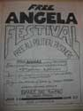
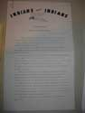

Item 13:
Letter to Dedmon from Jesse Jackson
protesting biased editorials on the 1968 West Side Riots (NL#447)

| Index |
|
| Section IV. Sweet Home Chicago [1965-present] |
|
| Subsection A.
Reclaiming the City |
|
| Group 1: Organizing Communities of Protest | |
| Item 1: Afro-American
Patrolman’s
League : AAPL arrest registry, 1970-1975 [CHS#1] |
no picture |
| Item 2: AAPL Caricature of
white
and black cops poster (c. 1970) [CHS#15] |
no picture |
| Item 3: Afro American
Patrolman's
League Reduce the Abuse, Complaint and Referral Service poster (c.
1970)
[CHS#21] |
no picture |
| Item 4: Chicago Women’s Liberation Union (*need) |
|
| Item 5: Envelope for packet from Health
Evaluation
and Referral Service (1982) [CHS#11] |
no picture |
| Item 6: How to Find the Best Abortion Facility
For You l (from #11) [CHS#12] |
no picture |
| Item 7: Questions and Answers About Childbirth
(from #11) [CHS#13] |
no picture |
| Item 8: Up From Abuse, domestic violence flyer
(from #11) [CHS#35] |
no picture |
| Item 9: Free Angela Festival, June 26-27, 1971
(NL#423) |
 |
| Item 10: “Free Bussing to Jails and Prisons”
Rising Up Angry (NL#424) |
|
| Item 11: Indians for Indians (NL#418) |
 |
| Item 12: Leaflet calling on
African Americans to boycott Michigan Avenue Shops, c. 1963 (NL#202) |
|
|
Item 13:
Letter to Dedmon from Jesse Jackson
protesting biased editorials on the 1968 West Side Riots (NL#447) |
|